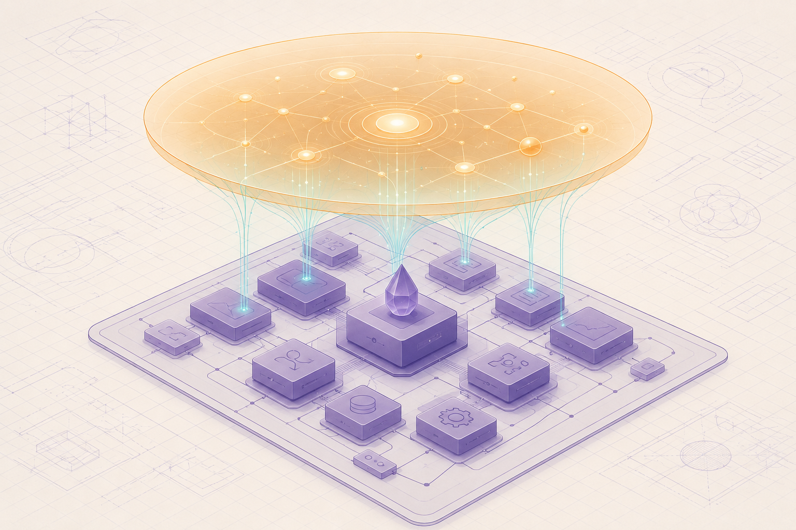

AshIntelligence
A declarative intelligence layer for the Elixir Ash Framework — turning ordinary applications into context-aware systems that reason over your data, rank what matters, and act. This is the product vision, the architecture, and a grounded look at how you'd actually build it on today's Ash AI ecosystem.
Before you turn the page
Ash made business logic declarative: you describe resources, actions, and policies, and the framework generates the plumbing. The idea behind AshIntelligence is to do the same thing for intelligence — describe what your app should understand and decide, and let the framework wire up the context, memory, reasoning, and execution.
This book has two jobs. First, to lay out the AshIntelligence vision faithfully — the problem it solves, its philosophy, its architecture, and the Spark DSL that would express it. Second — the part you asked for most — to stay honest about how you'd implement it today, because a surprising amount of it already exists in shipping libraries like ash_ai, ash_oban, and ash_state_machine. Where the PRD is aspirational, we say so.
Chapters 1–6 build the concept from the problem up to the architecture. Chapters 7–10 get concrete: the DSL, how to build it on real packages, the OTP/state-machine runtime, and safety. Chapter 11 is the payoff — the exciting use cases. Chapter 12 looks down the road.

A serene, modern editorial illustration in flat vector style: an Elixir application depicted as a tidy blueprint of violet resource boxes connected by thin edges, with a translucent amber 'intelligence layer' hovering above it like a lens, sending soft teal signal-lines down into the boxes — suggesting an app that has become self-aware of what matters. Cool ivory blueprint background with a faint engineering grid, Elixir-violet and Ash-amber palette with intelligence-teal highlights, generous whitespace, soft depth, no text baked in.
Generate this with your image agent, then drop the file here.
Built from a product requirements doc for AshIntelligence, then grounded against the real ecosystem: Ash AI (prompt-backed actions, tool calling, vectorization, MCP), Spark (the DSL toolkit behind Ash), AshOban, AshStateMachine, and Elixir LLM clients like ReqLLM, LangChain, and InstructorLite. Where AshIntelligence itself is a proposal rather than a shipped package, the book says so plainly. Everything renders offline.
The original request arrived as a long PRD that BookBank split into hundreds of fragments. Rather than make a page per fragment, this guide reorganizes the whole proposal into twelve chapters that actually read like a book — keeping every idea, losing none of the substance, and adding the implementation research you asked for.
Press ⌘R or reopen the book to refresh after edits.